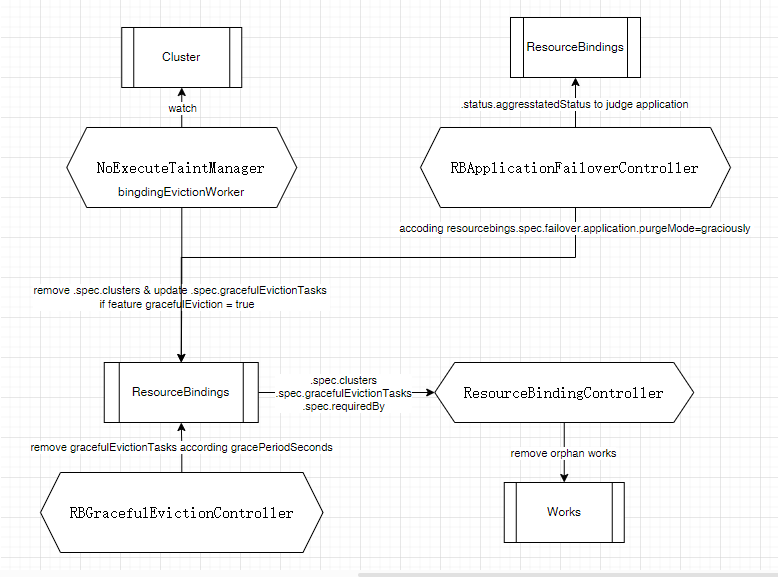

背景
我们使用了Karmada进行多集群的管理（主要是push模式），目前主要用于主备容灾的应用部署，来保证主、备集群应用镜像及配置版本的一致性。
起因是某次网络变更影响了Karmada控制面与子集群的连通性，存在2次小于5分钟级别的访问中断。结果导致了Karmada托管的大部分集群所有Pod的重启（所有被Karmada托管的资源均发生了重建）。
需找到导致资源重建，服务重启的原因，并采取规避措施。
问题分析
通过对集群资源和Karmada controller manager的日志查看，发现资源对应的works资源有删除重建的痕迹，works删除重建，虽然能保证与删除的资源对象逻辑一致，但是会导致子集群的资源重新下发。
那么为什么works会被删除重建？Karmada存在failover机制。代码整体脉络如下：

从上图可以看出，works被删除有两种触发方式：
cluster failover
当无法连上子集群时，karmada的cluster controller会为cluster资源打上cluster.karmada.io/unreachable的污点。
NoExecuteTaintManager会将包含污点集群的所有ResourceBindings过滤出来，根据容忍时间和是否开启优雅驱逐（如果未开启优雅驱逐，直接从.spec.cluster中移除），决定是否将集群从ResourceBindings.spec.clusters中移除，并添加到ResourceBindings.spec.gracefulEvictionTasks中。
RBGracefulevictionController根据gracefulEvictionTasks中的容忍时间，将集群从gracefulEvictionTasks中删除。设置了suppressDeletion=true的任务，不会被删除。这里默认设置的是false。
ResourceBindingController，将不存在于.spec.cluster/.spec.gracefulEvictionTasks/.spec.requiredBy三者中的work过滤出来，认为是orphan works。
application failover
当RBApplicationFailoverController通过ResourceBindings.status.aggregatedStatus中获取到资源不健康的状态后，会根据PropogationPolicy设置的优雅驱逐的策略，作出相应的处理：
（1）binding.Spec.Failover.Application.PurgeMode = Graciously：如果开启了优雅驱逐特性，将集群放置到ResourceBindings.spec.gracefulEvictionTasks中，并设置suppressDeletion=false，否则直接报错。
（2）binding.Spec.Failover.Application.PurgeMode = Never：如果开启了优雅驱逐特性，将集群放置到ResourceBindings.spec.gracefulEvictionTasks中，并设置suppressDeletion=true，否则直接报错。
（3）binding.Spec.Failover.Application.PurgeMode =Immediately，直接从spec.clusters中删除该集群。
与cluster failover后续流程相同。
总结
我们使用了karmada1.8.0的版本，通过对Karmada源码的分析，配合测试环境的验证，复现了上述问题，观察到断连集群的works的确被写了deleteTimestamp，最终被删除重建，导致了该集群所有资源被重建。因目前我们的PropagationPolicy和ClusterPropagationPolicy均未设置Failover字段，所以应用级别的failover不生效；Cluster的failover是导致该问题的主要原因，目前想到的应对措施：
调大对集群污点的容忍时间，目前是300s，增大到600s，可缓解，如果断连时间超过该值，依然会引发该问题。
通过controller的启动参数–enable-taint-manager=false关闭NoExecuteTaintManager的执行，这样就不会因集群断连而产生资源的failover，当然也无法享受failover带来的故障转移能力。